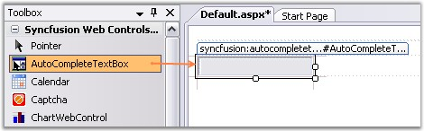
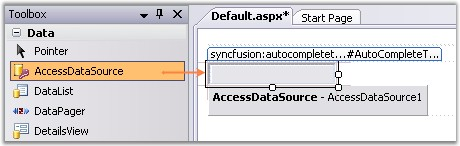
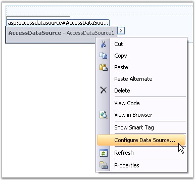
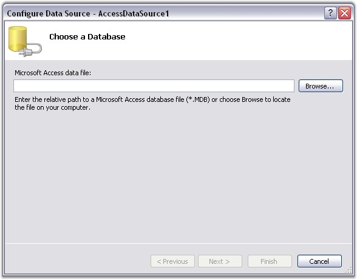
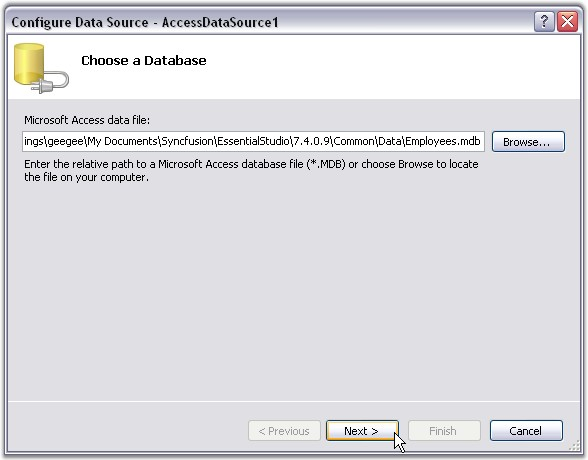
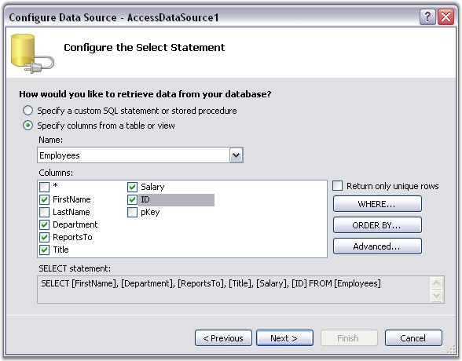
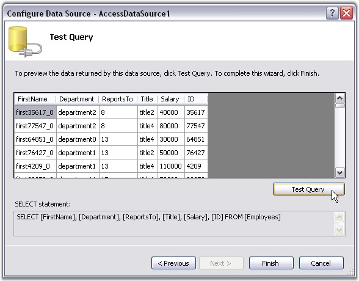

This topic will walk you through the procedure of data binding the AutoCompleteTextBox control in a Web application. Data for the control will be provided through the Access Data file.
1. Create a new ASP.NET Web application. For details, see Creating ASP.NET Web Application.
2. Drag the AutoCompleteTextBox control onto the Web Form.
3.

Figure 23: AutoCompleteTextBox dragged onto the Web Form
4. Drag the AccessDataSource from the Data tab in the VS.NET ToolBox onto the Web Form.

Figure 24: AccessDataSource dragged onto the Web Form
5. Right-click AccessDataSource, and click Configure Data Source.

Figure 25: Configure Data Source option selected on right-clicking the AccessDataSource
6. Now Configure Data Source dialog box appears.

Figure 26: Configure Data Source Dialog Box
7. Either give the path name where the mdb file should be referred from. Else click Browse to select the .mdb file name added to the current application.
8. Click Next. You will find two options for retrieving data from the database. Choose Specify Columns from Table or view option.
9. Select the TableName from the drop-down and check the required column names.

Figure 27: Employees.mdb" set as the Database

Figure 28: Specifying columns from the "Employees" Table
10. Click Next, and then test the query by clicking Test Query button.

Figure 29: Testing the Query
11. Click Finish.
Setting the DataSourceID Property
The DataSourceID property shows the list of available data sources and allows you to select the appropriate data source that should be used.
1. Set the DataMember property (optional).
2. Set the Datakeyfield property to the fieldname that you want to be displayed with the AutoComplete feature.
|
[ASPX]
<cc1:AutoCompleteTextBox ID="AutoCompleteTextBox1" runat="server"></cc1:AutoCompleteTextBox> |